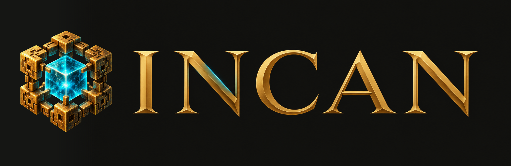
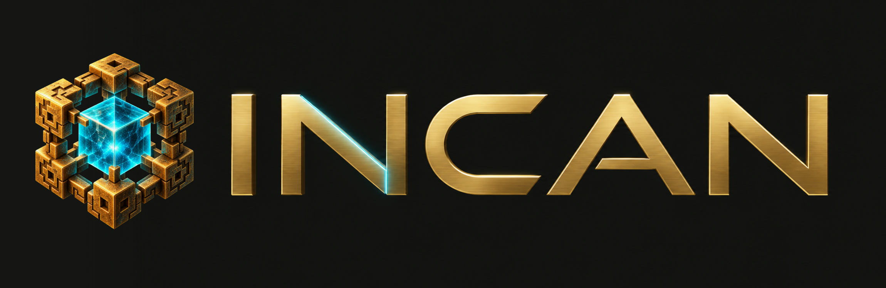
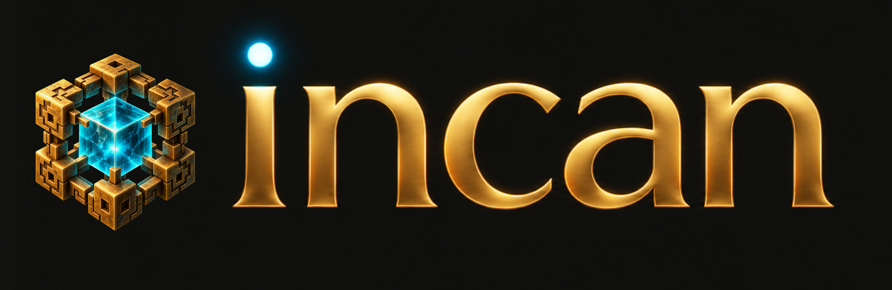

Three new Incan directions
Each direction beside the same original tesseract. Tap a pairing to zoom, or open its wordmark alone.
Option 1
Open full pairing ↗

Option 2
Open full pairing ↗

Option 3
Open full pairing ↗